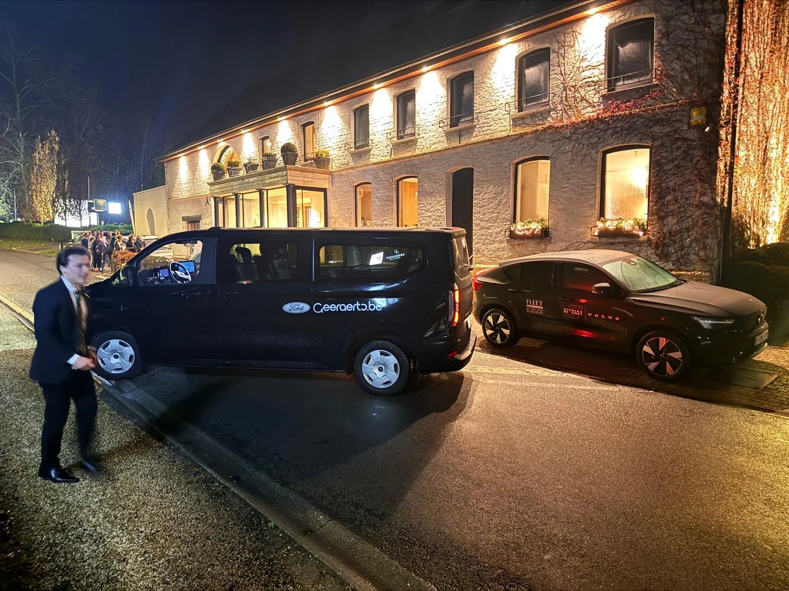

Boekingen geopend · 20 november 2026
Boek je taxi voor Rotary Royal
20 november · Krekelhof Gooik · Vanaf €10 per adres per rit.
Schrijf je hier in
Eén formulier per groep op hetzelfde adres. Je krijgt een bevestiging per e-mail.

Boekingen geopend · 20 november 2026
20 november · Krekelhof Gooik · Vanaf €10 per adres per rit.
Eén formulier per groep op hetzelfde adres. Je krijgt een bevestiging per e-mail.